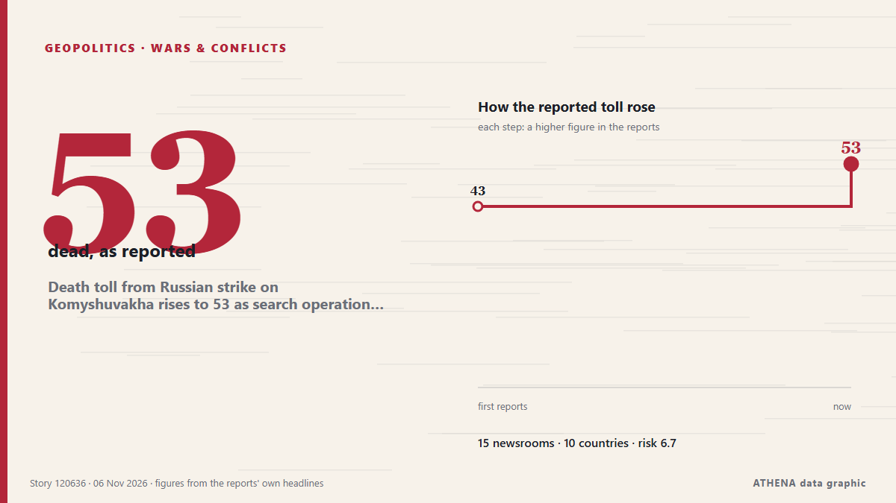

Death toll from Russian strike on Komyshuvakha rises to 53 as search operation enters 5th day

The strike was the deadliest Russian attack on Zaporizhzhia Oblast since the start of the full-scale invasion. from Kyiv Independent
Reported independently by 15 outlets in 10 countries since 4 Nov, first by The Independent; coverage is fading. ATHENA rates the risk high (6.7/10), driven mainly by the severity of the harm described and its geographic and sector reach. Confidence is 88% (high), with 15 independent outlets corroborating it and an average source reliability of 79%. Outlets by country: Ukraine (15), United Kingdom (2), Qatar (2). Coverage: 4 Nov to 6 Nov, 46 hours.
Why it matters: Russia's full-scale invasion of Ukraine began in February 2022. This tracker follows the fighting, strikes on infrastructure and the diplomacy around the war, as covered by outlets around the world.
What changed: 11 new reports from 7 outlets in the 24 hours to 6 Nov.
First reported as: Kyiv hit by mass blackouts as death toll from school bombing rises
At a glance
Selected, scored and written by ATHENA's published methodology. No editor intervenes in individual events. How this is produced ›
| 04 Nov 12:30 UTC | 2 |
|---|---|
| 04 Nov 14:30 UTC | 1 |
| 04 Nov 16:30 UTC | 2 |
| 04 Nov 18:30 UTC | 1 |
| 04 Nov 20:30 UTC | 3 |
| 04 Nov 22:30 UTC | 2 |
| 05 Nov 00:30 UTC | 0 |
| 05 Nov 02:30 UTC | 0 |
| 05 Nov 04:30 UTC | 0 |
| 05 Nov 06:30 UTC | 0 |
| 05 Nov 08:30 UTC | 5 |
| 05 Nov 10:30 UTC | 1 |
| 05 Nov 12:30 UTC | 3 |
| 05 Nov 14:30 UTC | 2 |
| 05 Nov 16:30 UTC | 0 |
| 05 Nov 18:30 UTC | 1 |
| 05 Nov 20:30 UTC | 0 |
| 05 Nov 22:30 UTC | 0 |
| 06 Nov 00:30 UTC | 0 |
| 06 Nov 02:30 UTC | 0 |
| 06 Nov 04:30 UTC | 0 |
| 06 Nov 06:30 UTC | 0 |
| 06 Nov 08:30 UTC | 3 |
| 06 Nov 10:30 UTC | 1 |
| 04 Nov 12:57 UTC | 3.9 |
|---|---|
| 04 Nov 16:26 UTC | 5.8 |
| 05 Nov 17:56 UTC | 6.8 |
| 06 Nov 10:52 UTC | 6.7 |
Why these numbers
Importance
Risk
Confidence
The reporting — who reported it, and when
headline as published · opens the original- The Independent · United KingdomKyiv hit by mass blackouts as death toll from school bombing rises
- Ukrainska Pravda (English) · UkraineForty people confirmed killed in Russian aerial bomb attack on school in Komyshuvakha – photos, video
- Ukrinform (English) · UkraineZelensky: Death toll in Komyshuvakha rises to 40, more than 30 may remain trapped under rubble
- Euronews English · FranceUkraine: Police footage captures Russian strike on Komyshuvakha shelter
- BBC News · United KingdomUkraine says bodycam video shows deadly Russian double-tap bombing
- Courthouse News · United StatesRussian attacks disrupt power in Kyiv, while the death toll in a stricken village rises to 40
- Al Jazeera English · QatarUkraine raises death toll from Russian strike on Zaporizhia to 40 people
- Ukrinform (English) · UkraineIsrael condemns Russian strike on Komyshuvakha
- CNA (Channel NewsAsia) · SingaporeDeath toll in Russian attack on aid centre up to 40: Zelenskyy
- APA (English) · AzerbaijanDeath toll from Russian strike on humanitarian aid center in Ukraine rises to 40
- Daily Trust · NigeriaUkraine: Death toll in Russian attack up to 40
- Ukrainska Pravda (English) · UkraineBodies of 43 people recovered from rubble of school destroyed by Russian strike in Komyshuvakha
- Ukrinform (English) · UkraineDeath toll from airstrike on Komyshuvakha rises to 42, search operations continue
- Ukrainska Pravda (English) · UkraineTwo police officers injured in drone attack near Komyshuvakha die in hospital
- Kyiv Post · UkraineUkraine Police Release Bodycam Footage of Final Moments Before Strike Killed 43
- Kyiv Independent · UkraineDeath toll of Russian strike on Komyshuvakha rises to 43 as search continues
- Anadolu Agency (English) · TurkeyDeath toll from Russian strike on aid center in southeastern Ukraine rises to 42
- Ukrinform (English) · UkraineDeath toll from Russian airstrike on Komyshuvakha rises to 43 – Zelensky
- Al Jazeera English · QatarPolice bodycam captures moments before deadly Russian strike in Ukraine
- Ukrinform (English) · UkraineWoman reported missing after Russian attack on Komyshuvakha found alive
- Anadolu Agency (English) · TurkeyZelenskyy says death toll from Russian strike on Zaporizhzhia region rises to 43
- Meduza (English) · RussiaUkraine releases bodycam footage from Komyshuvakha, where at least 42 people were killed in a Russian strike. The officer who filmed it was among the dead.
- Ukrinform (English) · UkraineCoE commissioner calls strikes on school in Komyshuvakha war crime
- Ukrainska Pravda (English) · UkraineDeath toll from Russian attack on Zaporizhzhia Oblast school reaches 53
- Ukrinform (English) · UkraineBodies of 53 people recovered from rubble of underground school in Komyshuvakha
- Kyiv Post · UkraineRussian Bombing of Komyshuvakha Kills 53, Search Continues
- Kyiv Independent · UkraineDeath toll from Russian strike on Komyshuvakha rises to 53 as search operation enters 5th day